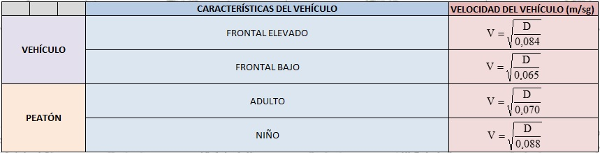

Menú Principal
v0.1.2025-08-20T15:00
CÁLCULO DE LA VELOCIDAD DE ATROPELLO CON EL MÉTODO APPEL
Introduce la distancia de proyección (D) en metros
Selecciona el tipo de frontal del vehículo
Selecciona si el peatón es adulto o niño
Calcular
